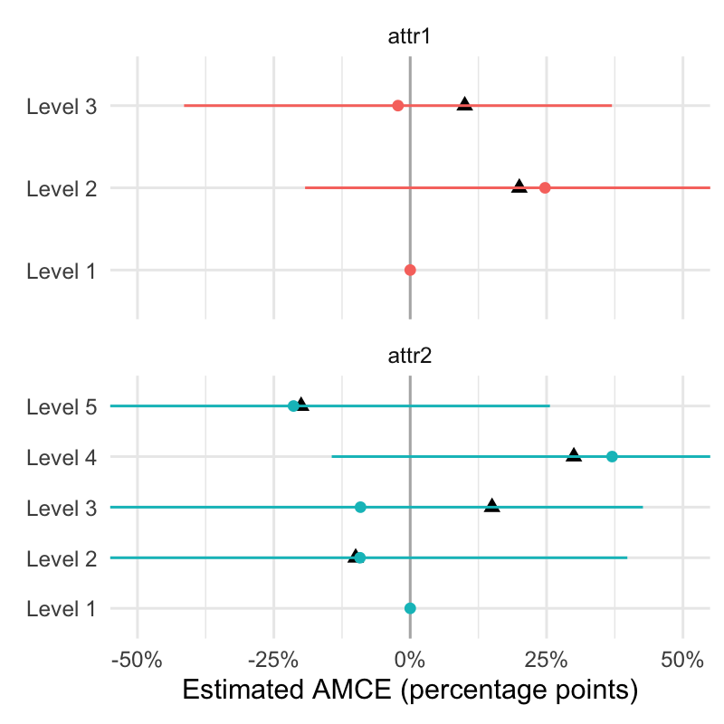

In this post, I demonstrate how to estimate Average Marginal Component Effects (AMCE) in a conjoint experiment using both a fixed‑n approach and a sequential, anytime‑valid approach.
Our analysis is based on the candidate experiment from Hainmueller et al.’s Causal Inference in Conjoint Analysis. Below is the paper’s description:
The choice between competing candidates for elected office is central to democracy. Candidates typically differ on a variety of dimensions, including their personal background and demographic characteristics, issue positions, and prior experience. The centrality of partisanship to voter decision making is amply documented [ref], so we focus here on the less-examined role of candidates’ personal traits [ref]. Within the United States, there is constant speculation about the role of candidates’ personal backgrounds in generating support or opposition; here, we harness conjoint analysis to examine those claims. We focus on eight attributes of would-be presidential candidates, all of which have emerged in recent campaigns. Six of these attributes can take on one of six values, including the candidates’ religion (Catholic, Evangelical Protestant, Mainline Protestant, Mormon, Jewish, or None), college education (no college, state university, community college, Baptist college, Ivy League college, or small college), profession (lawyer, high school teacher, business owner, farmer, doctor, or car dealer), annual income ($32K, $54K, $65K, $92K, $210K, and $5.1M), racial/ethnic background (Hispanic, White, Caucasian, Black, Asian American, and Native American), and age (36, 45, 52, 60, 68, and 75). 3 Two other attributes take on only two values: military service (served or not) and gender (male or female). Each respondent to our online survey—administered through Amazon’s Mechanical Turk [ref]—saw six pairs of profiles that were generated using the fully randomized approach described below. Figure A.1 in the Supplemental Information (SI) illustrates one choice presented to one respondent. The profiles were presented side-by-side, with each pair of profiles on a separate screen. To ease the cognitive burden for respondents while also minimizing primacy and recency effects, the attributes were presented in a randomized order that was fixed across the six pairings for each respondent. On the same screen as each candidate pairing, respondents were asked multiple questions which serve as dependent variables. First, they were asked to choose between the two candidates, a “forced-choice” design that enables us to evaluate the role of each attribute value in the assessment of one profile relative to another. This question closely resembles real-world voter decision making, in which respondents must cast a single ballot between competing candidates who vary on multiple dimensions. In the second and third questions following the profiles, the respondents rated each candidate on a one to seven scale, enabling evaluations of the levels of absolute support or opposition to each profile separately.
Candidate Experiment – Fixed-N Analysis
The data for the candidate experiment is publically available here or here. Let’s begin by loading the necessary packages and the data:
Each row in the dataset represents one candidate profile out of 1,733 candidate comparisons made by 311 survey respondents. Each of the candidate comparisons has 2 candidate profiles to choose between, so the total number of profiles in the data is 3,466 (1,733 x 2). The selected column is a binary outcome indicating whether the survey respondent (identified in the respondent column) selected that profile as the preferred candidate.
Each row represents one candidate profile from 1,733 comparisons (311 respondents × 2 profiles per comparison = 3,466 profiles). The selected column indicates whether the respondent (identified in the respondent column) chose that profile.
Estimating AMCEs
The primary estimand of interest is the Average Marginal Component Effect (AMCE). The AMCE measures the average change in the outcome when an attribute shifts from a baseline level to an alternative, averaging over the joint distribution other attributes. In potential outcomes notation:
\(Y_i(X_j=x_j,X_{−j})\) be the potential outcome for respondent \(i\) when attribute \(j\) is set to \(X_j=x_j\) and other attributes \(X_{-j}\) vary.
\(X_j^*\) be the baseline (or reference) level for attribute \(j\).
Then, \[\text{AMCE}(X_j)=E_{X_{−j}}[Y_i(X_j=x_j,X_{−j})−Y_i(X_j=X_j^∗, X_{−j})],\] where expectation \(E_{X_{-j}}\) is taken over the joint distribution of the other attributes.
We estimate this using a regression model that includes all attributes. Note: Cluster standard errors at the respondent level since each respondent provides multiple observations.
Code
# Function to add the reference level for each of our attributesadd_reference <-function(data, low ="conf.low", high ="conf.high") { data <- data |>separate(col ="contrast", into =c("contrast", "reference"), sep =" - ") data <-bind_rows( data, data |>mutate(contrast = reference) |>distinct(term, contrast, .keep_all =TRUE) |>mutate(across(c(estimate, {{low}}, {{high}}), ~0)) )return(data)}# Estimate AMCEs with a logistic regression modelmodel <-feglm( selected ~ Military + Religion + Education + Profession + Income + Race + Age+ Gender,data = candidate,family ="binomial",cluster =~ respondent)# Calculate the marginal effects (AMCEs) as probabilitiesmarginal_effects <-avg_slopes(model, newdata ="mean")ggplot(add_reference(marginal_effects),aes(x = estimate,y = contrast,xmin = conf.low,xmax = conf.high,color = term )) +geom_vline(xintercept =0, color ="gray70") +geom_point() +geom_linerange() +facet_wrap(~ term, ncol =1, scales ="free_y", drop =TRUE) +scale_x_continuous(labels =label_percent()) +labs(x ="Estimated AMCE (percentage points)", y ="") +theme_minimal() +theme(legend.position ="none")
Estimating Marginal Means
Another estimand of interest is a purely descriptive quantity—marginal means. The marginal mean for a particular value \(x_j\) of attribute \(j\) is: \[\mu(x_j) := E_{X_{-j}}[Y | X_j=x_j],\] where \(Y\) are the observed outcomes, \(X_j\) is the attribute of interest, and the expectation \(E\) is taken over the joint distribution of all other attributes \(X_{-j}\).
We could estimate this non-parametrically (using group_by() and summarize()) or via regression which will give us corresponding CIs, p-values, etc. in one fell swoop.
Code
# A function to calculate the marginal mean for a single attributemarginal_mean <-function(model, attribute) { mms <-avg_predictions(model, "balanced", by = attribute) mms <- mms |>rename("level"= {{attribute}}) |>mutate("term"= {{attribute}})return(mms)}marginal_means <-bind_rows(lapply(c("Military","Religion","Education","Profession","Income","Race","Age","Gender" ),function(attribute) marginal_mean(model, attribute) ))ggplot( marginal_means,aes(x = estimate,y = level,xmin = conf.low,xmax = conf.high,color = term )) +geom_vline(xintercept =0.5, color ="gray70") +geom_point() +geom_linerange() +facet_wrap(~ term, ncol =1, scales ="free_y", drop =TRUE) +scale_x_continuous(labels = scales::label_percent()) +labs(x ="Marginal Means", y ="") +theme_minimal() +theme(legend.position ="none")
Candidate Experiment – Sequential Analysis
Fixed‑\(N\) estimators provide valid inference at a single predetermined sample size \(N\) (e.g., 95% confidence intervals are valid only at single \(N\)). Typically, researchers will utilize power calculations to determine sufficient sample sizes to detect treatment effects of interest prior to running an experiment. However, power calculations rely on unverifiable assumptions which can cause them to be inaccurate not to mention difficult to perform, particularly in the context of conjoint experiments. Instead of relying on power calculations, researchers often would like to monitor statistical results as data accumulate and stop once their estimates become statistically significant. However, if we repeatedly calculate our AMCE estimates and fixed-\(N\) 95% CIs and collect more data until they are statistically significant, our probability of committing a Type 1 error will far exceed the nominal significance level (\(\alpha = 0.05\)).
Anytime‑valid inference offers a solution by yielding p‑values and confidence sequences (CSs) that remain valid even if we “peek” at the data and stop the experiment once our estimates are statistically significant. In this blog post I explore methods by Lindon et al. that develop anytime-valid p-values and CSs for linear regression models. These methods adapt standard regression outputs (e.g., from lm() in R) to produce anytime‑valid p‑values and CSs.
Estimating Anytime-Valid p-values and Confidence Sequences
Below I will demonstrate how we can adapt our code for estimating AMCES to output anytime-valid CSs and p-values instead of the usual fixed-n CIs and p-values. Check the full code for calculating anytime-valid CSs here.
## Same code as before# Estimate AMCEs with a logistic regression modelmodel <-feglm( selected ~ Military + Religion + Education + Profession + Income + Race + Age+ Gender,data = candidate,family ="binomial",cluster =~ respondent)# Calculate the marginal effects (AMCEs) as probabilitiesmarginal_effects <-avg_slopes(model, newdata ="mean")## Calculate anytime-valid p-values and CSsmarginal_effects_sequential <-sequential_f_cs(delta = marginal_effects$estimate,se = marginal_effects$std.error,n = model$nobs,n_params = model$nparams,Z =solve(get_vcov(marginal_effects)),term = marginal_effects$term,contrast = marginal_effects$contrast)
Estimating sequential AMCEs
We begin by writing a function that will simulate a random respondent from a conjoint experiment with specified AMCEs. Our simulated conjoint experiment will have a binary outcome and two attributes (Attribute 1 with 3 levels, Attribute 2 with 5 levels). The true AMCEs are:
Attribute
Level
True AMCE
1
2
0.2
1
3
0.1
2
2
-0.1
2
3
0.15
2
4
0.3
2
5
-0.2
Code
# Function to simulate a random survey participantsimulate_profile <-function(amce_attr1, amce_attr2, intercept =0.5) { attr1_levels <-c("Level 1", names(amce_attr1)) attr2_levels <-c("Level 1", names(amce_attr2))# Randomly sample a level for each attribute (uniformly) attr1_val <-sample(attr1_levels, 1) attr2_val <-sample(attr2_levels, 1)# Determine the effect for attribute 1: baseline gets effect 0 effect1 <-if (attr1_val =="Level 1") 0else amce_attr1[attr1_val]# Determine the effect for attribute 2: baseline gets effect 0 effect2 <-if (attr2_val =="Level 1") 0else amce_attr2[attr2_val]# Compute the latent probability p p <- intercept + effect1 + effect2# Ensure that p is within [0, 1]stopifnot(p >=0&& p <=1)# Simulate the binary outcome using p as the success probability. outcome <-rbinom(1, size =1, prob = p)return(tibble(attr1 = attr1_val,attr2 = attr2_val,outcome = outcome,p = p ))}# Specify the attribute-level AMCEs for attribute 1 & 2amce_attr1 <-c("Level 2"=0.2, "Level 3"=0.1)amce_attr2 <-c("Level 2"=-0.1, "Level 3"=0.15, "Level 4"=0.3, "Level 5"=-0.2)
We simulate 100 survey participants initially and update our AMCE estimates and anytime-valid 95% CSs with each additional participant until reaching \(N=1000\).
Code
# "Gather" 100 survey responses before estimatingsim_data <-bind_rows(lapply(1:100, \(i) simulate_profile(amce_attr1, amce_attr2, 0.3)))# Initialize tibble to collect our AMCE estimatessim_estimates <-tibble()# Simulate a sequential conjoint with total N=1000pb <-txtProgressBar(min =1, max =1000, style =3)for (i in1:1000) {# Randomly simulate a survey participant sim_data <-bind_rows( sim_data,simulate_profile(amce_attr1, amce_attr2, 0.3) )# Estimate our model sim_model <-feglm( outcome ~ attr1 + attr2,data = sim_data,family ="binomial" )# Calculate marginal effects marginal_eff_sim <-avg_slopes(sim_model, newdata ="mean")# Calculate sequential p-values and CSs marginal_eff_sim_seq <-sequential_f_cs(delta = marginal_eff_sim$estimate,se = marginal_eff_sim$std.error,n = sim_model$nobs,n_params = sim_model$nparams,Z =solve(get_vcov(marginal_eff_sim)),term = marginal_eff_sim$term,contrast = marginal_eff_sim$contrast ) |>add_reference(low ="cs_lower", high ="cs_upper") |>mutate(iter = i)# Append data sim_estimates <-bind_rows(sim_estimates, marginal_eff_sim_seq)setTxtProgressBar(pb, i)}close(pb)
Finally, we plot the progression of the AMCE estimates and CSs across the entire experiment.
Code
truth <-tribble(~term, ~contrast, ~estimate,"attr1", "Level 2", 0.2,"attr1", "Level 3", 0.1,"attr2", "Level 2", -0.1,"attr2", "Level 3", 0.15,"attr2", "Level 4", 0.3,"attr2", "Level 5", -0.2)# Plot the CSs over timeplot_anim <-ggplot( sim_estimates,aes(x = estimate,y = contrast,xmin = cs_lower,xmax = cs_upper,color = term ) ) +geom_point(data = truth,aes(x = estimate, y = contrast),inherit.aes =FALSE,shape =17,size =2 ) +geom_vline(xintercept =0, color ="gray70") +geom_point() +geom_linerange() +facet_wrap(~ term, ncol =1, scales ="free_y", drop =TRUE) +scale_x_continuous(labels =label_percent()) +coord_cartesian(xlim =c(-.5, .5)) +labs(x ="Estimated AMCE (percentage points)", y ="") +theme_minimal() +theme(legend.position ="none") +transition_states( iter,transition_length =3,state_length =0 ) +ease_aes()# Turn this into a videoanimation_mp4 <-animate( plot_anim,renderer =av_renderer(),nframes =300,height =4,width =4,units ="in",res =200)animation_gif <-animate( plot_anim,renderer =gifski_renderer(),nframes =300,height =4,width =4,units ="in",res =200)

We see our estimates and CSs converge towards the true AMCEs (marked by diamond-shaped points) over time, maintaining valid coverage despite estimating AMCEs and corresponding p-values and CSs at each step!